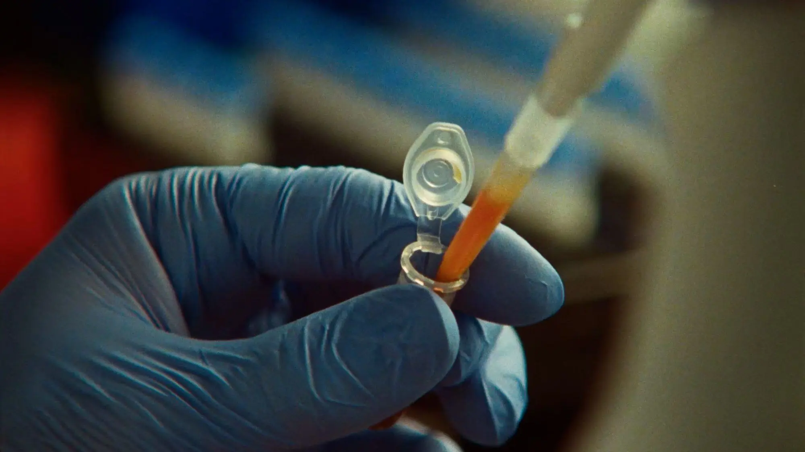

Claude 发现一种带有类 CRISPR 重复序列的新型酶系统
📖 中文摘要
专业术语注解
逆转录酶（RT）：能把RNA复制成DNA的酶基因组挖掘：在序列数据库中系统搜索尚无人表征的基因，并推断其功能阵列相关逆转录酶（ART）：Claude发现的、由逆转录酶与串联重复序列构成的新酶系统巨型噬菌体（jumbo phage）：基因组异常大的感染细菌的病毒可编程核酸酶：能按设计靶向特定序列、执行切割或复制粘贴DNA等操作的酶系统📄 中文全文
- 类别： 科学（Science）
- 来源： https://www.anthropic.com/research/claude-discovers-novel-enzyme-system
科学（Science） 2026 年 9 月 23 日

已发布 2026 年 9 月 23 日 主题相关文章 * 科学 2026 年 11 月 6 日 教 AI 构建科学模型
阅读更多 我们正在 Anthropic 组建一个新的生命科学研究小组与实验室。我们的重点是使用 Claude 开展基础生物学研究：探索 DNA 数据集以识别尚未表征的蛋白质家族，大规模生成假设，并通过实验室实验加以检验。本文介绍了这项工作背后的团队，并分享早期成果——在科学家仅给出高层次指导的情况下，Claude 发现了一个性质令人联想到 CRISPR 的新型酶系统。
许多彻底改变生物学与医学的发现，都始于某位科学家在自然界令人惊叹的分子机器多样性中注意到某种异常。限制性内切酶——即在特定短序列处切割 DNA 的蛋白质——最初发现于细菌的免疫系统，它们在那里摧毁入侵病毒的 DNA。研究人员意识到，可以利用这些酶在选定位置切割 DNA，并把一个生物体的基因拼接到另一个生物体中，由此催生了生物技术产业。Taq 聚合酶是一种在高温下复制 DNA 的酶，最初在黄石公园一处温泉里的细菌中被发现，后来成为 PCR 的基础——PCR 是现代诊断中广泛使用的 DNA 复制方法。CRISPR 最初只是某些细菌 DNA 中一段不同寻常的重复序列，如今则成为基于基因编辑的药物的基石。
2026 年春天，我们组建了一个研究小组，想看看通用 AI 模型能否把这类发现系统化，并加速这类发现。我们相信，这种加速将来自确立一种开展生物学研究的新方式：在这套流程的每一步，智能体都与人类协作。要建立这种新的工作方式，我们需要建起自己的实验室，并组建一支单一团队，承担从训练 Claude 掌握生物学到在实验室里开展实验的全部工作。 今天，我们分享首批研究项目之一的早期成果：Claude 自主发现了一个与一串 DNA 重复序列相关联的新型酶系统，这一模式令人联想到 CRISPR。尽管我们尚不清楚它的功能，但 Claude 发现的这个系统具备一组特征，此前只在少数几个其他系统中同时出现过，而那些系统全都是可编程的，能够执行切割、复制与粘贴 DNA 之类的操作。除了已经改变了科学与医学的 CRISPR 之外，另外几个此类系统如今也正作为前景可观的工具处于开发之中。 Claude 发现的这个系统建立在逆转录酶（RT）之上，这类酶能把 RNA 复制成 DNA。虽然这个来自巨型噬菌体（jumbo phage）的基础 RT 在以往研究中已被鉴定出来，但 Claude 似乎是第一个注意到该系统界定特征的研究者——与之相关联的一串非编码 DNA 序列，以及一个功能未知的额外辅助蛋白。 在审阅预印本之后，CRISPR 基因组编辑先驱之一、MIT 与 Broad Institute 教授 Feng Zhang 表示：
这是 AI 智能体能够为生物学发现作出贡献的一个令人振奋的范例。与逆转录酶相关联的 RNA 重复序列阵列的鉴定确实耐人寻味，值得深入研究。我希望这项工作能鼓励更多科学家去探索 AI 可以如何支持他们的研究。 我们给 Claude 下达了一个提示，让它在庞大的 DNA 序列数据库中搜索值得关注的新 RT 实例。我们的参与仅限于最初的提示与实验室工作，而 Claude 智能体则梳理数据库、考察各个不同的 RT 家族，并运用自己的判断挑出有意思的候选对象。在大约 950 个智能体耗费 210 million 个 token、用 21 小时检索这些数据之后，其中一个智能体发现了非同寻常的东西：一段重复的 DNA 序列模式，出现在某个模样古怪的 RT 的基因旁边。经过我们实验室的进一步分析与检验，我们确认这一模式标志着一个此前未被表征的酶系统，它存在于噬菌体（感染细菌的病毒）中，我们称之为阵列相关逆转录酶（array-associated reverse transcriptases，ART）。 我们理解 ART 主要功能的各项工作仍在进行中。不过，我们认为尽早分享这类发现很重要，既能展示 Claude 的能力，也能让更广泛的社群了解我们正在做什么。我们已经发布了一份预印本，详见此处。
关于我们的实验室
我们是一支由科学家组成的团队，职业生涯一直致力于探索不寻常的蛋白质，并专长于运用计算方法系统地解读 DNA、阐释其演化，挑出值得进一步表征的生物系统。在加入 Anthropic 之前，我们的研究帮助人们更好地理解 CRISPR 系统的演化与调控，发现面向下一代细胞与基因疗法的新酶，并构建工具以加速识别 DNA 中的异常，例如人类致病变异。我们隶属于 Anthropic 的生命科学组织，与从事药物发现、以及训练 Claude 掌握生物学与化学的团队并肩工作。 我们的实验室位于湾区，看上去就是一间普通的分子生物学实验室。我们只从事涉及较低生物安全风险等级（BSL-1 与 BSL-2）的研究，不处理能够感染人类的病原体。所有实验室工作都由人类科学家完成。尽管我们曾通过 Model Hardware Standard 之类的举措，尝试用 AI 加速实验室工作，但这种方式不太适合我们分子生物学研究里那些临时应变的工作流。
我们的工作方式
我们的许多工作流都让 Claude 在海量与功能未知蛋白质相关的 DNA 序列集合中检索。一种典型模式始于对某个给定蛋白质家族的普查。Claude 阅读相关文献，用公开数据复现已确立的结果，以检验自己的方法。随后，它搜索不属于任何已描述系统的家族成员或基因组邻居，并为每个候选对象撰写一份简短、可供人阅读的报告，提出一种功能，并说明支撑其论断的证据。在后续分析中，Claude 会批判性地评估这些证据——通常大多数候选对象会在这一阶段被淘汰。一次普查最终可能只留下一个值得检验的候选对象，也可能一个都没有。 当某个候选对象通过我们的审阅后，我们会在实验室里检验它：在标准实验室菌株中表达该蛋白质，并从生化与结构两方面对其进行表征，Claude 则协助解读数据。我们在 Claude Science 和 Claude Code 中开展工作，也就是任何科学家都能用到的同样工具，有时还会用我们自己编写的一套脚手架，来协调许多并行运行的 Claude 会话。 由于 Claude 生成假设的速度如此之快，假设本身也成了我们研究的对象。单轮研究就能产出数百到数千份候选报告，我们一直在追问：那些我们判定值得检验的提议，与我们搁置一旁的提议，究竟有何区别。我们学到的东西会重新写进给 Claude 的指令里，教会它模仿我们自己的科学品味。
Claude 发现 ART
在过去几年里，研究者发现了更多逆转录酶（RT），其中大多数来自细菌，在那里它们作为免疫系统的一部分发挥作用。几乎所有 RT 家族都是通过基因组分析、也就是基因组挖掘（genome mining）找到的：这要求研究者在序列数据库中搜索尚无人表征的基因，留意其中不寻常的那些，并弄清它们的功能。 Claude 智能体收集了超过 200,000 个 RT，挑出 3,500 个新的候选系统，再将其缩小到 20 个最引人注目的候选对象，并逐一分析、产出可供人阅读的报告。对一位专家科学家而言，这类分析可能要花上数周乃至数月。 在研究过程中，Claude 注意到一个不寻常的 RT 家族，并决定更仔细地审视它。在梳理 RT 附近的原始 DNA 序列时，这个智能体惊呼：「[RT 旁边的 DNA] 太壮观了：我肉眼就能看到一个串联重复阵列……这是一个类 CRISPR 的……重复阵列？！」
Claude 检测到一个此前无人注意到的重复模式时，正在读取的原始 DNA
_随后，它大体上像一位人类科学家面对潜在发现时那样继续推进。它数出重复单元的数量、测量它们之间的间距，把这一排布与已知的 RT 系统相比较，并在文献中检索是否曾有人报告过这一模式。经过透彻的分析，它确信自己发现了一个新的生物系统，并提交了一份报告供人类审阅。
它发现的这个系统 ART 主要存在于噬菌体中，由三部分组成：RT、紧邻其旁的一个伙伴基因，以及一长串间距均匀的 DNA 重复序列。这种重复排布类似 CRISPR 阵列——后者储存着一组各不相同的 RNA 序列，正是它们让 CRISPR-Cas 系统成为可编程的生物技术工具。我们的首批实验表明，ART 阵列同样会表达为一组彼此不同的短 RNA，这暗示该系统里可能存在某种类似的机制。
进一步实验正在进行，以确定 ART 的工作机制；我们分享这些早期发现，是为了向社群表明，Claude 能够自主察觉异常，并推动分析、开启生物学发现。
更多细节可参见我们的技术报告，详见此处。
与我们合作
我们希望这项工作能向更广泛的科学界展示由 AI 驱动假设生成的价值，也愿意与其他科学家合作，把这套方法推广到基因组学及其他领域的广泛问题上。如果你有研究问题的设想，我们很乐意听到你的声音。
▸ 英文原文（点击展开）
Claude discovers a novel enzyme system with CRISPR-like repeats
- Date: 2026-09-23
- Source: https://www.anthropic.com/research/claude-discovers-novel-enzyme-system
Claude discovers a novel enzyme system with CRISPR-like repeats
Published Sep 23, 2026 Topics
Related articles * Science Nov 6, 2026 Teaching AI to build scientific models
View more _We’re introducing a new life sciences research group and laboratory at Anthropic. Our focus is on fundamental biology research using Claude: exploring datasets of DNA to identify uncharacterized protein families, generating hypotheses at scale, and testing them through experiments in the lab. This post introduces the team behind this work and shares early results in which Claude discovered a novel enzyme system with properties reminiscent of CRISPR, with only high-level direction from our scientists.
_ Many discoveries that have revolutionized biology and medicine started with a scientist noticing something odd in the staggering diversity of molecular machines found in nature. Restriction enzymes , proteins that cut DNA at specific short sequences , were found in bacterial immune systems, where they destroy the DNA of invading viruses. Researchers realized they could use these enzymes to cut DNA at chosen places and splice genes from one organism into another, which launched the biotechnology industry. Taq polymerase, an enzyme that copies DNA at high temperatures, was identified in a bacterium in a Yellowstone hot spring. It became the basis for PCR, the DNA-copying method used in much of modern diagnostics. CRISPR was first noticed as an unusual repeat sequence in the DNA of certain bacteria, and is now the foundation of gene editing-based medicines.
In the spring of 2026, we formed a research group to see whether general AI models can systematize and accelerate such discoveries. We believe that this acceleration will come from establishing a new way of doing biology research, in which agents collaborate with humans in every step of the process. Developing this new way of working required that we build our own lab and a single team working on everything from training Claude in biology to running experiments in the lab. Today, we’re sharing early results from one of our first research programs, in which Claude autonomously discovered a novel enzyme system that is associated with an array of DNA repeats, a pattern reminiscent of CRISPR. Although we don’t yet know its function, the system that Claude discovered has a set of characteristics that have only ever been found together in a handful of other systems, all of which are programmable and perform operations like cutting, copying, and pasting DNA. Beyond CRISPR, which has already transformed science and medicine, several other such systems are now in development as promising tools. The system that Claude found is based on a reverse transcriptase (RT), enzymes that copy RNA into DNA. While this underlying RT, found in a jumbo phage, had been identified in previous studies, Claude appears to be the first to notice the system’s defining features—an associated array of non-coding DNA sequences and an additional accessory protein of unknown function. After reviewing the pre-print, Feng Zhang, one of the pioneers of CRISPR genome editing and a professor at MIT and the Broad Institute, said:
This is an exciting example of how AI agents can contribute to biological discovery. The identification of RNA-repeat arrays associated with reverse transcriptases is genuinely intriguing and merits further investigation. I hope this work encourages more scientists to explore how AI can support their research. We gave Claude a prompt to search through a massive database of DNA sequences for interesting new examples of RTs. Our involvement was limited to the initial prompt and the lab work, while Claude agents combed through the database, investigated the distinct RT families, and used their own judgment to identify interesting candidates. After 21 hours spent searching this data by roughly 950 agents using 210 million tokens, one of the agents spotted something remarkable: a repeating pattern of DNA sequences that occurs next to the gene for an odd-looking RT. After further analysis and testing in our lab, we recognized that this pattern marked a previously uncharacterized enzyme system found in bacteriophages (the viruses that infect bacteria) that we call array-associated reverse transcriptases (ART). Our work to understand the primary function of ARTs is ongoing. However, we think it is important to share such findings early, both to demonstrate Claude’s capabilities and to give the broader community insight into what we’re working on. We have released a pre-print (here) that discusses this in more detail.
About our lab
We are a team of scientists who have spent our careers exploring unusual proteins, and specialize in using computational approaches to systematically read DNA, interpret its evolution, and pick out biological systems for further characterization. Our research prior to joining Anthropic has helped to better understand the evolution and regulation of CRISPR systems, discover new enzymes for next-generation cell and gene therapies, and build tools for accelerating the identification of anomalies in DNA, such as human pathogenic variants. We are part of Anthropic’s life sciences organization, alongside teams whose work includes drug discovery, and training Claude in biology and chemistry. Our lab, located in the Bay Area, looks like a typical molecular biology lab. We do research that involves only the lower levels of the biosafety risk level (BSL-1 and BSL-2) and we do not handle pathogens that can infect humans. All of the lab work is performed by human scientists. Although we’ve experimented with using AI to accelerate lab work with initiatives like the Model Hardware Standard, this approach is less conducive to the sort of ad hoc workflows that are involved in our molecular biology research.
How we work
Many of our workflows involve having Claude search through the vast collection of DNA sequences associated with proteins without a known function. One typical pattern begins with a survey of a given protein family. Claude reads the relevant literature and reproduces the established results from public data to check its methods. It then searches for family members or genomic neighbors that fit no described system, and writes a short, human-readable report for each candidate that proposes a function and describes the evidence supporting its claims. In follow-up analyses, Claude critically evaluates the evidence—typically most candidates are eliminated at this stage. A survey may end with a single candidate worth testing, or with none. When a candidate survives our review, we test it in the laboratory, expressing the protein in standard laboratory strains and characterizing it biochemically and structurally, with Claude helping to interpret the data. We do our work in Claude Science and Claude Code, the same tools available to any scientist, and sometimes with a harness of our own that coordinates many Claude sessions running in parallel. Because Claude produces hypotheses so prolifically, the hypotheses themselves have become an object of study for us. With hundreds to thousands of candidate reports from a single campaign, we have been asking what distinguishes the proposals we judge worth testing from those we set aside. What we learn goes back into the instructions we give Claude and teaches it to mimic our own scientific taste.
Claude finds ART
In the past few years, researchers have discovered many more reverse transcriptases (RTs), most of them in bacteria, where they act as part of the immune system. Nearly all RT families were found by genomic analysis, or genome mining, which requires researchers to search sequence databases for genes that no one has characterized, notice the unusual ones, and work out what they do. Claude agents gathered over 200,000 RTs, picked out 3,500 new candidate systems, and narrowed those to the 20 most compelling candidates that they analyzed to produce human-readable reports. For an expert scientist, this type of analysis can take weeks to months of work. During the course of its research, Claude noticed an unusual RT family and decided to examine it in greater detail. While combing through the raw DNA sequence near the RT, the agent exclaimed: “[The DNA next to the RT] is spectacular: I can see by eye a tandem repeat array … that's a CRISPR-like … repeat array?!”
The raw DNA Claude was reading when it detected a repeat pattern that no one had noticed
_
_It then proceeded much as a human scientist would when faced with a potential discovery. It counted the repeats and measured their spacing, compared the layout with the known RT systems, and searched the literature for any previous report of the pattern. After a thorough analysis it was convinced that it had found a new biological system, and filed a report for human review.
The system it found, ART, is found mainly in bacteriophages and consists of three parts: the RT, a partner gene beside it, and a long array of evenly spaced DNA repeat sequences. The repeat layout resembles a CRISPR array, which holds a bank of different RNA sequences that make CRISPR-Cas systems programmable biotechnological tools. Our first experiments show that the ART array is also expressed as a set of distinct short RNAs, suggesting that something analogous may be at play for this system.
Further experiments are underway to determine how ART works, and we are sharing these early findings to show the community that Claude can autonomously detect anomalies and drive analyses to initiate biological discoveries.
You can find more detail in our technical report (here).
Work with us
We hope this work demonstrates the value of AI-driven hypothesis generation to the wider scientific community, and we would like to work with other scientists to extend this approach to a broad range of problems, in genomics and in other fields. If you have a proposal for a research question, we would like to hear from you.